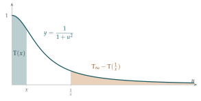

STEP III 2017，第 6 题
继续之前，请先阅读题目（原题为英文）。题目载于 STEP Support Programme 的题目资料库： step.maths.org/questions/17-s3-q6
引子
\(\pi\) 究竟是甚么？在中学，它是圆周与直径之比，而 \(\sin\) 和 \(\cos\) 则用三角形来定义。这对几何来说已经足够，却留下了一些棘手的问题。沿着曲线的“长度”到底是甚么？为甚么 \(\sin x\) 的麦克劳林级数（Maclaurin series）偏偏是那个样子？我们又怎样知道加法公式（addition formulas）对所有角都成立，而不只限于画得出来的角？
这道题展示了一条截然不同的入门途径。忘掉三角形和圆吧。只从一个积分 \(\mathrm{T}(x) = \int_0^x \frac{\mathrm{d}u}{1+u^2}\) 出发，它所需要的不过是 第 4.1 节 中积分的定义。把 \(\pi\) 定义为 \(2\mathrm{T}_\infty\)。然后只用代换法（substitution），证明 \(\mathrm{T}(\sqrt3) = \frac{\pi}{3}\) 和 \(\mathrm{T}(\sqrt2 - 1) = \frac{\pi}{8}\)，也就是你所熟悉的 \(\arctan\sqrt3 = 60^\circ\) 和 \(\tan 22\tfrac12^\circ = \sqrt2 - 1\)。三角学就这样从无到有地重建起来。
动笔之前
你心里其实知道 \(\mathrm{T}(x) = \arctan x\) 和 \(\mathrm{T}_\infty = \frac\pi2\)。题目不准你使用这些事实，而这正是用意所在：一切都必须由积分推导出来。不过，这点心照不宣的知识是很有用的向导。
第 (i) 和第 (ii) 部分分别对应哪些三角恒等式（trigonometric identities）？（想想 \(\arctan x + \arctan\frac1x\)，以及 \(\tan(A + B)\) 的公式。）
第 (i) 部分就是 \(\arctan x + \arctan\frac1x = \frac\pi2\)。第 (ii) 部分则是乔装了的加法公式 \(\tan(A + B) = \frac{\tan A + \tan B}{1 - \tan A\tan B}\)：设 \(u = \tan A\) 和 \(a = \tan B\)，则 \(v = \tan(A + B)\)。这道题不靠任何几何，单凭积分就证明了这些恒等式。
逐步解题
阶段 1 反射 \(u \mapsto 1/u\)
在 \(\mathrm{T}(x)\) 中代入 \(u = 1/w\)。于是 \(\mathrm{d}u = -\mathrm{d}w/w^2\)，而 \(\dfrac{1}{1 + u^2} = \dfrac{w^2}{w^2 + 1}\)，所以 \[\mathrm{T}(x) = \int_{\infty}^{1/x} \frac{w^2}{w^2 + 1}\cdot\left(-\frac{1}{w^2}\right)\mathrm{d}w = \int_{1/x}^{\infty} \frac{\mathrm{d}w}{1 + w^2} = \mathrm{T}_\infty - \mathrm{T}(x^{-1}). \qed\] 换句话说，\(\frac{1}{1+u^2}\) 之下由 \(0\) 到 \(x\) 的面积，等于由 \(\frac1x\) 到 \(\infty\) 的面积（图 4.2.1）。

阶段 2 加法代换
用商法则（quotient rule）对 \(v = \dfrac{u + a}{1 - au}\) 求导。然后把 \(1 + v^2\) 化成单一分式，再作比较。
\[\begin{aligned} \frac{\mathrm{d}v}{\mathrm{d}u} &= \frac{(1 - au) + a(u + a)}{(1 - au)^2} = \frac{1 + a^2}{(1 - au)^2}, \\ 1 + v^2 &= \frac{(1 - au)^2 + (u + a)^2}{(1 - au)^2} = \frac{(1 + a^2)(1 + u^2)}{(1 - au)^2}. \end{aligned}\] 两式相除，得 \(\dfrac{1 + v^2}{1 + u^2} = \dfrac{1 + a^2}{(1 - au)^2} = \dfrac{\mathrm{d}v}{\mathrm{d}u}\)。■
这表示 \(\dfrac{\mathrm{d}u}{1 + u^2} = \dfrac{\mathrm{d}v}{1 + v^2}\)。所以代换 \(u \mapsto v\) 完全没有改变被积函数（integrand）。那么它对 \(\mathrm{T}(x)\) 的积分上下限有甚么影响？
当 \(u\) 由 \(0\) 变到 \(x\) 时（其中 \(x < \frac1a\)，故 \(1 - au > 0\) 始终成立，而 \(v\) 连续且递增），\(v\) 由 \(a\) 变到 \(\frac{x + a}{1 - ax}\)。所以 \[\mathrm{T}(x) = \int_0^x \frac{\mathrm{d}u}{1 + u^2} = \int_a^{(x+a)/(1-ax)} \frac{\mathrm{d}v}{1 + v^2} = \mathrm{T}\!\left(\frac{x + a}{1 - ax}\right) - \mathrm{T}(a). \qed\]
阶段 3 再多两个恒等式
结合第 (i) 部分，并使用两次： \[\mathrm{T}(x^{-1}) = \mathrm{T}_\infty - \mathrm{T}(x) = \mathrm{T}_\infty - \mathrm{T}\!\left(\frac{x + a}{1 - ax}\right) + \mathrm{T}(a) = 2\mathrm{T}_\infty - \mathrm{T}\!\left(\frac{x + a}{1 - ax}\right) - \mathrm{T}(a^{-1}). \qed\] 现在更换变量名称：设 \(y = 1/x\) 和 \(b = 1/a\)。条件 \(x < 1/a\) 变成 \(1/y < b\)，即 \(y > 1/b\)，而 \[\frac{x + a}{1 - ax} = \frac{1/y + 1/b}{1 - 1/(by)} = \frac{b + y}{by - 1}.\] 所以 \(\mathrm{T}(y) = 2\mathrm{T}_\infty - \mathrm{T}\!\left(\dfrac{y + b}{by - 1}\right) - \mathrm{T}(b)\)。■
阶段 4 特殊值
在最后一个恒等式中选取 \(y\) 和 \(b\)，使自变量 \(\frac{y + b}{by - 1}\) 刚好等于 \(y\) 本身。你会得到甚么？
取 \(y = b = \sqrt3\)：这时 \(y > \frac1b\)，而 \(\dfrac{\sqrt3 + \sqrt3}{3 - 1} = \sqrt3\)。恒等式变成 \(\mathrm{T}(\sqrt3) = 2\mathrm{T}_\infty - 2\mathrm{T}(\sqrt3)\)，所以 \[\mathrm{T}(\sqrt3) = \tfrac23\mathrm{T}_\infty. \qed\]
至于 \(\sqrt2 - 1\)，试在加法恒等式中取 \(x = a = \sqrt2 - 1\)。\(\frac{2x}{1 - x^2}\) 是多少？\(\mathrm{T}(1)\) 又是多少？
取 \(x = a = \sqrt2 - 1\)（由于 \(x^2 = 3 - 2\sqrt2 < 1\)，故 \(x < \frac1a\)），加法恒等式给出 \(2\mathrm{T}(x) = \mathrm{T}\!\left(\frac{2x}{1 - x^2}\right)\)。而 \(1 - x^2 = 2\sqrt2 - 2 = 2(\sqrt2 - 1) = 2x\)，所以 \(\frac{2x}{1 - x^2} = 1\)，于是 \(2\mathrm{T}(\sqrt2 - 1) = \mathrm{T}(1)\)。最后，在第 (i) 部分取 \(x = 1\)，得 \(\mathrm{T}(1) = \mathrm{T}_\infty - \mathrm{T}(1)\)，所以 \(\mathrm{T}(1) = \frac12\mathrm{T}_\infty\)。因此 \[\mathrm{T}(\sqrt2 - 1) = \tfrac14\mathrm{T}_\infty. \qed\]
回顾
保持被积函数不变的代换。两个关键步骤所用的代换，都令 \(\frac{\mathrm{d}u}{1+u^2}\) 保持不变，只有积分上下限移动了。积分的这类“对称性”（symmetry）威力强大。
不动点（fixed point）。\(\mathrm{T}(\sqrt3)\) 的值，来自选取适当的数，使某个表达式等于它本身，于是恒等式变成了方程。
定义可以来自分析。我们从没有用过三角形，却重新得到了 \(\frac\pi3\) 和 \(\frac\pi8\)（其中 \(\pi\) 定义为 \(2\mathrm{T}_\infty\)）。
背后的数学
在严格的分析课程中，函数 \(\exp\)、\(\sin\)、\(\cos\) 和 \(\ln\) 不能随便假设存在；它们必须被建构出来，其性质也必须加以证明。标准的做法有三种。你可以用幂级数（power series）来定义它们（\(\sin x = x - \frac{x^3}{3!} + \cdots\)）。你可以把它们定义为微分方程（differential equation）的解，就如练习中那道 1986 年样本试卷的题目（\(\mathrm{f}' = \mathrm{f}\)、\(\mathrm{f}(0) = 1\) 定义了 \(\exp\)）。你也可以像这里一样，用积分来定义反函数（inverse function）：\(\ln x = \int_1^x \frac{\mathrm{d}u}{u}\) 和 \(\arctan x = \int_0^x \frac{\mathrm{d}u}{1+u^2}\)，然后定义 \(\pi = 2\int_0^\infty \frac{\mathrm{d}u}{1+u^2}\)。每种做法各有所长，而证明它们全都给出相同的函数，是一道令人满足的练习。试与 第 3.8 节 的函数方程（functional equation）做法比较。
圆以外：椭圆积分
积分的做法可以推广，而三角形的做法却做不到。1718 年，Giulio Fagnano 研究双纽线（lemniscate）这条 8 字形曲线的弧长（arc length），由此引出 \(\int_0^x \frac{\mathrm{d}u}{\sqrt{1 - u^4}}\)，并找到一个能把弧长加倍的代换，正如我们的代换把 \(\mathrm{T}\) 加倍一样。欧拉（Euler）在 1751 年读到 Fagnano 的著作，找出了完整的加法公式；这最终经由阿贝尔（Abel）和雅可比（Jacobi），发展成椭圆函数（elliptic functions）的理论：椭圆函数就是这类积分的反函数，它们之于双纽线，正如 \(\sin\) 和 \(\cos\) 之于圆。我们在高斯（Gauss）关于算术几何平均（AGM）的工作中（第 2.6 节）遇过同一个积分。椭圆函数如今是数论的核心；第 1.9 节 的椭圆曲线（elliptic curves）就是它们在几何上的投影。
计算 \(\pi\)
加法恒等式也是计算 \(\pi\) 的那些最著名公式的基础。举例说，反复运用它可以证明 \(\mathrm{T}(1) = 4\mathrm{T}(\frac15) - \mathrm{T}(\frac{1}{239})\)，这就是 1706 年的梅钦公式（Machin’s formula）；配合级数 \(\mathrm{T}(x) = x - \frac{x^3}{3} + \frac{x^5}{5} - \cdots\)，它算出了 \(\pi\) 的 \(100\) 位数字，并在其后两个半世纪一直是首选的方法。这是 第 5.1 节 的主题。
思维技巧
寻找令被积函数保持不变的代换。它们会化为该积分所定义的函数的恒等式。
这里 \(u \mapsto 1/u\) 和 \(u \mapsto \frac{u+a}{1-au}\) 都保持 \(\frac{\mathrm{d}u}{1+u^2}\) 不变，并分别给出反射公式和加法公式。同一个想法用于其他积分，正是特殊函数（special functions）理论的基础。
延伸练习
指数函数与余弦。试做 STEP II Specimen paper，第 6 题。这道题只凭指数函数和余弦各自的微分方程，推导出它们的加法公式。（提示：对于余弦，找出两个理应为零的组合，并证明它们的平方和是常数。）
反正弦。试做 STEP III 2007，第 7 题。这道题用处理本节积分的同一手法来处理反正弦（inverse sine），并以一个代换把两者联系起来。
一条早期的梅钦型公式。利用加法恒等式证明 \(\mathrm{T}(\frac12) + \mathrm{T}(\frac13) = \mathrm{T}(1) = \frac12\mathrm{T}_\infty\)。
\(\mathrm{T}_\infty\) 是有限的。证明对所有 \(x \geq 1\) 都有 \(\mathrm{T}(x) \leq 1 + \int_1^x \frac{\mathrm{d}u}{u^2} < 2\)，解释为甚么当 \(0 < x < 1\) 时同样有 \(\mathrm{T}(x) < 2\)，并由单调收敛定理（monotone convergence theorem）（第 2.2 节）推断 \(\mathrm{T}_\infty\) 存在。
延伸阅读
Tom Körner, Calculus for the Ambitious（Cambridge University Press）。严格地建构初等函数，并讨论各种不同的做法。
Walter Rudin, Principles of Mathematical Analysis（McGraw-Hill）。即著名的“baby Rudin”；第 8 章的引言只用寥寥数页，便优雅地由幂级数建构出 \(\exp\)、\(\sin\) 和 \(\cos\)。程度较深。
Victor Prasolov & Yuri Solovyev, Elliptic Functions and Elliptic Integrals（American Mathematical Society）。想知道双纽线通往何处，可读此书。程度较深。